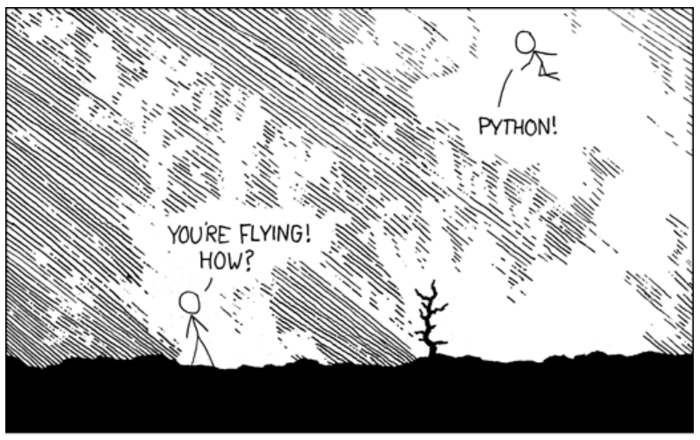
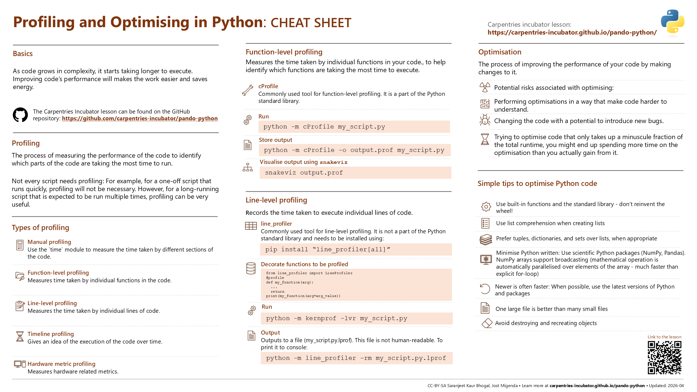

Want to make your Python code fly? Try Profiling and Optimisation in Python!
Originally posted on STEP-UP’s blog page.

Is your Python code running slower than you would like? Do you want to make it run faster, but you’re not sure where to start? This blog post by Saranjeet Kaur Bhogal (Imperial College London) and Jost Migenda (King’s College London) summarises key learnings from the STEP-UP workshops on “Performance profiling and optimisation for Python”.
You might have come across the scenario where as the code you write grows in complexity, it starts taking longer to execute. In such situations, you might wonder whether the code you have written is efficient or not. Improving your code’s performance will not only make your work easier, it will also save energy and benefit the environment.
As a part of the STEP-UP project, we organised a couple of Carpentries Incubator course workshops on “Performance profiling and optimisation for Python”. This blog post highlights key learnings from these workshops.
What is profiling and when to profile your code
Profiling is the process of measuring the performance of your code, and identifying which parts of your code are taking the most time to run. This is important because it allows you to focus your optimisation efforts on the parts of your code that will have the biggest impact on performance. There are many tools available for profiling Python code, such as cProfile and line_profiler. These tools can help you identify which functions or lines of code are taking the most time to run, and can also provide information about memory usage.
However, not every script needs profiling. For example, if you have a one-off script that runs quickly, then profiling will not be necessary. On the other hand, if you have a long-running script that is expected to be run multiple times, then profiling can be very useful.
Different types of profiling
There are different types of profiling that you can use to measure the performance of your code. Some of the most common types of profiling are described below:
Manual profiling: This approaches the problem of profiling by manually inserting code to measure the time taken by different sections of the code. This can be done using the time module in Python, which provides functions for measuring time. For example, you can use time.time() to get the current time in seconds since the epoch, and then calculate the duration of a section of code by taking the difference between the start and end times.
This approach is sometimes useful to get a first rough idea of how long different parts of code take to execute. However, trying to get more detailed information quickly becomes a lot of work, so it’s usually preferable to start with the next approach right away:
Function-level profiling: This measures the time taken by individual functions in your code. It can help you identify which functions are taking the most time to execute. Commonly used tools for function-level profiling include cProfile, which is part of the Python standard library.
To use cProfile, you can run your script with profiling enabled by using the command python -m cProfile my_script.py. This will give you a report of the time taken by each function in your code, as well as the number of times each function was called.Expand commentComment on line R37Resolved
Furthermore, the output of cProfile can be visualised using tools like snakeviz, which provides an interactive visualization of the profiling results, making it easier to identify bottlenecks in your code.
Store the output of cProfile in a file using the -o option, and then visualise it with snakeviz:
python -m cProfile -o profile_output.prof my_script.py
snakeviz profile_output.profLine-level profiling: Often, looking at the code of a slow function already makes it obvious what’s taking so much time. However, if it’s not obvious and you would like to get more granular information about which lines of code are taking the most time to execute, you can use line-level profiling. This type of profiling records the time taken to execute individual lines of code. Tools like line_profiler can be used for line-level profiling. The line_profiler must be attached to specific functions and cannot attach to a full Python file or project. If your Python file has significant code in the global scope it will be necessary to move it into a new function which can then instead be called from global scope.
To use line_profiler, you need to decorate the functions you want to profile with \@profile, and then run your script with the kernprof command:
from line_profiler import LineProfiler
@profile
def my_function(arg):
...
return
print(my_function(arg=arg_value))python -m kernprof -lvr my_script.pyTimeline profiling: To get a visual representation of the execution of your code over time, you can use timeline profiling. This type of profiling provides an idea of how different parts of your code interact with each other and can help identify bottlenecks.
Hardware metric profiling: This type of profiling measures hardware-related metrics such as CPU usage, memory usage, and I/O operations. It can help you understand how your code interacts with the underlying hardware and identify opportunities for optimisation.
Now that you have profiled your code, what next?
Once you have profiled your code and identified the bottlenecks, you can start “optimising” your code to improve its performance. Optimising is the process of improving the performance of your code by making changes to it. Optimisation can be a complex process, and it is important to remember that it is not always necessary or desirable to optimise your code. In some cases, it may be more important to focus on writing clear and maintainable code, rather than trying to optimise for performance. As Donald Knuth taught us, “Premature optimisation is the root of all evil”, there are potential risks associated with “how” and “when” you are trying to optimise your code. Some of these potential risks include: performing optimisations in a way that make code harder to understand, changing the code with a potential to introduce new bugs, if you are trying to optimise code that only takes up a minuscule fraction of the total runtime, you might end up spending more time on the optimisation than you actually gain from it.
Below are some general tips for optimising your Python code:
Many built-in functions in Python, and some other parts of the standard library, are implemented in C and optimised for performance, so using them can often be much faster than writing your own implementation in Python. For example, if you want to calculate the sum of a list of numbers, using the built-in
sum()function is likely to be 3 - 8 times faster (based on benchmarking) than writing your own for loop to calculate the sum.When creating lists, using list comprehension can often be faster than using a for loop to create a list. For example, if you want to create a list of squares of numbers, using a list comprehension like
[x**2 for x in range(100_000)]is likely to be twice as fast as using a for loop to append the squares to a list.When appropriate, using tuples, dictionaries, and sets can often be faster than using lists. For example, if you need to store a collection of unique items, sets (which are implemented as hash tables) can check in constant time whether an object is already a member of the set. In contrast, checking whether an object is already in a list, requires comparing it with every other entry in the list. For large collections, using a set can be several orders of magnitude faster than using a list.
Whenever possible, using scientific Python packages like NumPy and Pandas can often be faster than writing your own implementations in pure Python. These packages are optimised for performance and often use underlying C or Fortran code to achieve high performance. Moreover, NumPy arrays support broadcasting many mathematical operations or functions - this means that the operation/function is applied to each element of the array in parallel. For large arrays, this can be orders of magnitude faster than looping over entries in the array explicitly.
Newer is often faster: When possible, use the latest versions of Python and packages. Newer versions of Python often include performance improvements and optimisations, and newer versions of packages may also include optimisations that can improve performance.
Reading or writing one large file is faster than many small files. For example, if you have a large dataset that is split into multiple small files, it may be faster to read the entire dataset into memory at once rather than reading each file separately.
Avoid destroying and recreating objects. For example, if you need to modify a list, it is often faster to modify the list in place rather than creating a new list with the modified values.

In conclusion, profiling and optimisation are important techniques for improving the performance of your Python code. Profiling allows you to identify which parts of your code are taking the most time to run, and optimisation allows you to make changes to your code to improve its performance. By using the tips and techniques described in this blog post, you can make your Python code run, maybe even fly, faster and more efficiently!
Get involved
The “Performance profiling and optimisation for Python” course is available on the Carpentries Incubator. If you have any feedback or suggestions, please feel free to open an issue on the repository. You are also welcome to use the materials to run the course at your institution and share your experiences with the community. By getting involved, you can help to improve the course and make it more useful for others who are interested in learning about profiling and optimisation in Python.